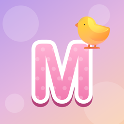

Minik'in Dünyası
Minik's World · Alfabe, kelimeler ve oyunlar · Alphabet, words & games
Destek
2–6 yaş için reklamsız, oyunları çevrimdışı çalışan bir öğrenme uygulaması: 29 harf, ilk kelimeler, sayılar, renkler ve İngilizce.
- Ebeveyn bölümü: Ana ekranın sağ üstündeki kilit düğmesine dokunun ve çarpma sorusunu yanıtlayın. Dil, ses, müzik ve günlük süre ayarları oradadır.
- Minik Plus: Ebeveyn bölümünden planları görebilir, satın almayı geri yükleyebilir ve aboneliği yönetebilirsiniz. İptal, Apple hesabı ayarlarından yapılır.
- Soru, öneri veya sorun bildirmek için: bize buradan yazın.
- Gizlilik Politikası
Support
An ad-free learning app for ages 2–6 whose games work offline: letters, first words, numbers, colours and English.
- Grown-ups' area: tap the lock button at the top right of the home screen and answer the multiplication question. Language, voice, music and daily play-time settings are there.
- Minik Plus: see the plans, restore a purchase or manage a subscription in the grown-ups' area. Cancel in your Apple Account settings.
- Questions, ideas or problems: write to us here.
- Privacy Policy